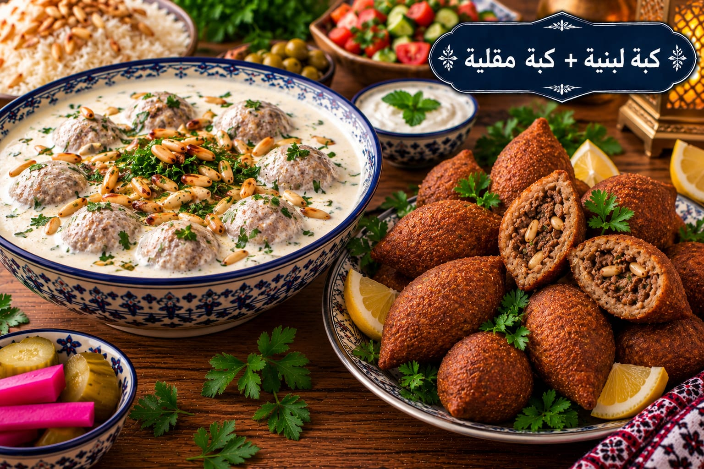

كبة لبنية + كبة مقلية
طريقتان للكبة بحشوة اللحم

مقادير كبة لبنية + كبة مقلية
- 3 أكواب برغل ناعم
- 500 غ لحم هبرة
- 300 غ لحم مفروم للحشوة
- 1 بصلة
- 1½ ملعقة صغيرة ملح
- 1 ملعقة صغيرة بهار مشكل
- ½ ملعقة صغيرة فلفل أسود
- 1 كغ لبن للكبة اللبنية
- 1 ملعقة كبيرة نشا
- 1 بيضة
- زيت للقلي
طريقة عمل كبة لبنية + كبة مقلية
- انقعي البرغل 10 دقائق ثم اعصريه جيدًا وافرميه مع لحم الهبرة والبصل ونصف الملح حتى تتكون عجينة متماسكة.
- حمري لحم الحشوة وتبليه بالبهار والفلفل واتركيه يبرد.
- شكلي أقراص الكبة واحشيها وأغلقيها جيدًا.
- للمقلية: سخني الزيت على نار متوسطة واقلي الكبة حتى تصبح بنية ذهبية وتنضج الحشوة.
- للبنية: اخفقي اللبن والنشا والبيضة والملح على البارد ثم ارفعيه مع التحريك حتى يغلي، أضيفي الكبة واتركيها على نار هادئة حتى تنضج.